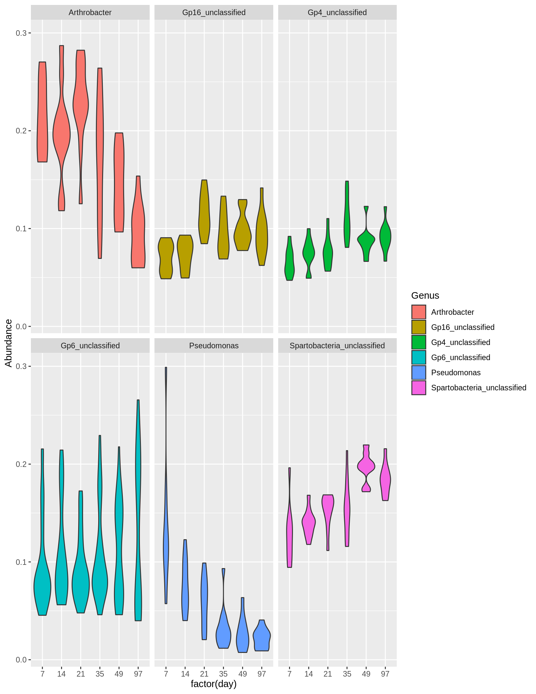
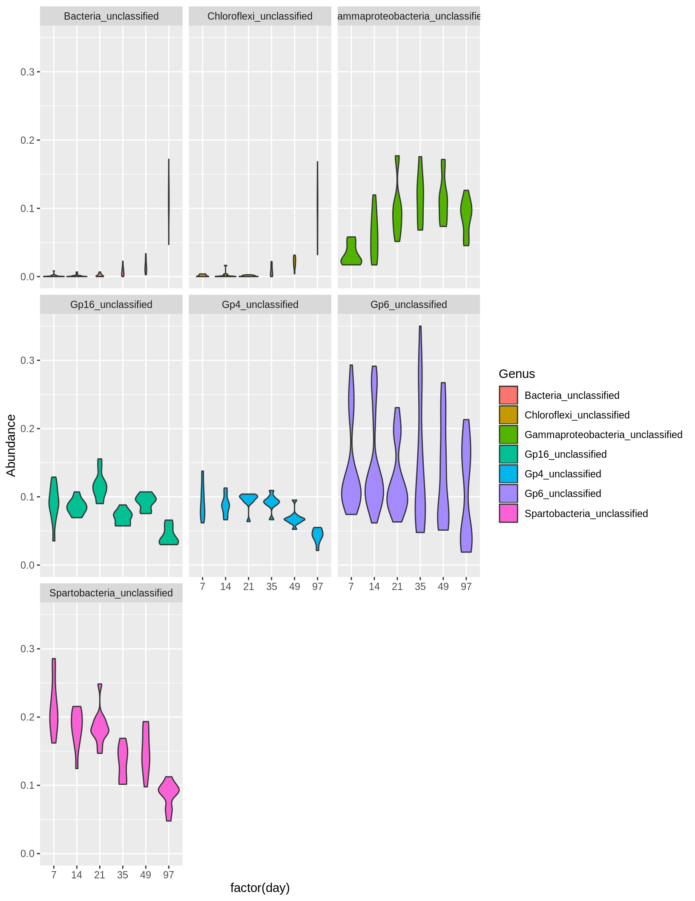
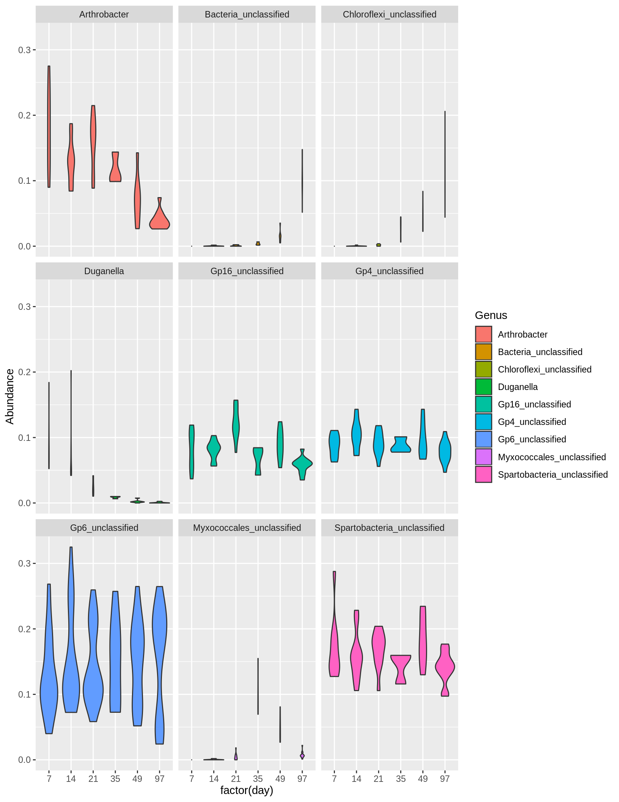
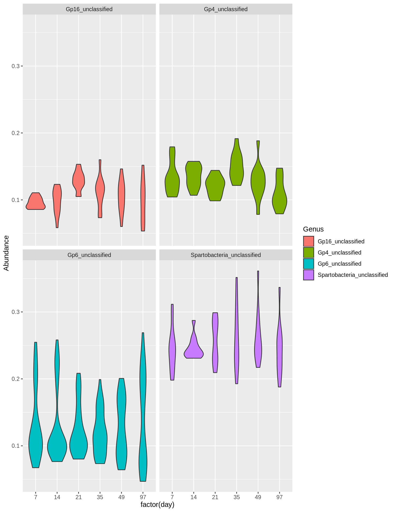

inc.raw.physeq <- readRDS("../data/incubation_physeq_Aug18.RDS")library(phyloseq)
library(tidyverse)## ── Attaching packages ──────────────────────────────────────────── tidyverse 1.3.0 ──## ✓ ggplot2 3.2.1 ✓ purrr 0.3.3
## ✓ tibble 2.1.3 ✓ dplyr 0.8.3
## ✓ tidyr 1.0.0 ✓ stringr 1.4.0
## ✓ readr 1.3.1 ✓ forcats 0.4.0## ── Conflicts ─────────────────────────────────────────────── tidyverse_conflicts() ──
## x dplyr::filter() masks stats::filter()
## x dplyr::lag() masks stats::lag()library(vegan)## Loading required package: permute## Loading required package: lattice## This is vegan 2.5-6inc.physeq <- subset_samples(inc.raw.physeq, day %in% c("7",
"14",
"21",
"35",
"49",
"97"))
pp <- inc.physeq %>%
filter_taxa(function(x) sum(x) >= 1, T)rare <- rarefy_even_depth(pp, sample.size = 6000, rngseed = 2222, replace = F, trimOTUs = T)## `set.seed(2222)` was used to initialize repeatable random subsampling.## Please record this for your records so others can reproduce.## Try `set.seed(2222); .Random.seed` for the full vector## ...## 41 samples removedbecause they contained fewer reads than `sample.size`.## Up to first five removed samples are:## i063i068i087i092i111## ...## 11186OTUs were removed because they are no longer
## present in any sample after random subsampling## ...# physeq <- rare
# days <- c("7", "14", "21", "35", "49", "97")
# trt <- c("Alfalfa")
Day_top10 <- function(physeq, trt, days){
trt <- prune_samples(sample_data(physeq)$treatment %in% c(trt), physeq)
d0 <- subset_samples(trt, day == days[1])
l0 <- names(sort(taxa_sums(d0), TRUE)[1:5])
d7 <- subset_samples(trt, day == days[2])
l7 <- names(sort(taxa_sums(d7), TRUE)[1:5])
d14 <- subset_samples(trt, day == days[3])
l14 <- names(sort(taxa_sums(d14), TRUE)[1:5])
d21 <- subset_samples(trt, day == days[4])
l21 <- names(sort(taxa_sums(d21), TRUE)[1:5])
d35 <- subset_samples(trt, day == days[5])
l35 <- names(sort(taxa_sums(d35), TRUE)[1:5])
d49 <- subset_samples(trt, day == days[6])
l49 <- names(sort(taxa_sums(d49), TRUE)[1:5])
list <- unique(c(l0, l7, l14, l21, l35, l49))
list
phy <- prune_taxa(list, trt) %>%
filter_taxa(function(x) sum(x) >= 1, T) %>%
transform_sample_counts(function(x) x / sum(x))
data <- psmelt(phy)
p <- ggplot(data, aes(factor(day), Abundance)) +
geom_violin(aes(fill = Genus)) +
facet_wrap(. ~ Genus)
p
}While there are more than 5 OTUs that represent the most abundant 5 OTUs from each day, we only see 6 genera listed because some of these OTUs share the same genera.
days <- c("7", "14", "21", "35", "49", "97")
alf <- Day_top10(rare, c("Alfalfa"), days)
alf
days <- c("7", "14", "21", "35", "49", "97")
c <- Day_top10(rare, c("Compost"), days)
c
days <- c("7", "14", "21", "35", "49", "97")
ca <- Day_top10(rare, c("CompAlfa"), days)
ca
days <- c("7", "14", "21", "35", "49", "97")
cc <- Day_top10(rare, c("Control"), days)
cc